Tablas para la mesa
Las tablas de la serie, transcritas de los BCS v2.0 Charts & Tables. Recuerda que cada juego trae además su tabla de efectos del terreno y sus modificadores propios.
Combat Table 5.1 · 2d6 modificados
| Tirada | Pérdida | Retirada* | Tráfico |
|---|---|---|---|
| 4 o menos | A2 | — | — |
| 5-6 | A1 | — | — |
| 7-8 | A1 | D: Situacional | Traffic |
| 9-10 | [A1] | D: Situacional | Traffic |
| 11-12 | D1 | D: Retirada | — |
| 13 o más | D2 | D: Retirada | — |
A# el atacante pierde # pasos de su unidad atacante. [A1] A1 solo si el defensor está en Prepared Defense. D# el defensor pierde # pasos, el primero de su unidad del AR.
Situacional retirada de 3 hexes y voltear; en Prepared Defense o en/tras Key Terrain no se retira, pero cada unidad pierde un paso. Retirada automática (5.5e). Traffic solo si el defensor se retira o es destruido.
* Si la unidad atacante muere, se ignoran todas las retiradas.
Modificadores del Combat Table
| Cada bando parte de su Action Rating y suma… | DRM |
|---|---|
| Comunes | |
| Dual o apoyo apropiado (atacante: solo Red AV; defensor: cualquier AV) | +1 |
| Marcador MSR Blocked | −1 |
| Solo el atacante | |
| Double OBJ Zone | +1 |
| La formación atacante está en Prepared Defense | −1 |
| Bombardeo de supresión (regular / choque) | +2 / +1 |
| Asistencia (solo ataque regular) | +1 |
| Ataque desde fuera del mapa | +2 |
| Choque precedido de ataque por fuego | +1 |
| Unidad AV del choque: ruptura / Hard Red (solo uno) | +2 / +1 |
| Solo el defensor | |
| Prepared Defense | +1 |
| Exactamente dos unidades de combate en el hex | +1 |
| Más de dos unidades de combate | −2 |
| El atacante cruza un lado de hex con Terrain | +1 |
| Dual, infantería o Stand Off real en: hex de Terrain / Ciudad o Urbano | +1 / +2 |
| Hard Red AV en hex abierto (no Dual, apoyo ni PD) | +2 |
| Unidad AV en hex Urbano (no Stand Off desplegado ni apoyo) | −3 |
DRM neto = total del atacante − total del defensor.
Engagement Table 5.2 · 2d6 modificados
Cada bando: AV + Action Rating (el apoyo usa el AR de su host). DRM neto = tirador − blanco.
| Modificador | DRM |
|---|---|
| Solo el tirador | |
| Double OBJ Zone | +1 |
| Limited AV | −1 |
| Solo el blanco | |
| Prepared Defense y/o varios apoyos (5.2d) | +1 |
| Unidad Stand Off que no está en apoyo | +1 |
| Blanco: AV real | ||
|---|---|---|
| 5 o menos | 6-8 | 9 o más |
| Pérdida del tirador y Tráfico | Pérdida para ambos* | Pérdida del blanco y retirada |
| Blanco: apoyo | |||
|---|---|---|---|
| 3 o menos | 4-5 | 6-10 | 11 o más |
| Pérdida del tirador y Tráfico | Sin resultado | Drop | Pérdida y Drop |
Tráfico en el hex del tirador. Retirada: 3 hexes y voltear a la cara de movimiento.
1) Se ignora el resultado contra el tirador si está fuera del alcance del blanco. 2) No hay disparo si el blanco está fuera del alcance del tirador. 3) Si el blanco está en Terrain o en PD, alcance máximo 1 hex.
* Contra una unidad en Screen, «pérdida para ambos» pasa a «sin pérdidas; el blanco se retira 3 hexes».
Barrage Table 5.3 · 5.4 · 1d6
| Objetivo | Arty | Attack by Fire |
|---|---|---|
| Unidad Hard · Stand Off desplegado · hex Urbano | 6 | 6 |
| Hex de Ciudad | 5-6 | 6 |
| Hex de Terrain · Prepared Defense | 4-6 | 5-6 |
| Ninguno de los anteriores | 3-6 | 4-6 |
Un dado por unidad del hex (por cada punto, en la artillería). Cada dado en el rango es una baja. Si aplican varias filas, se usa la de menos probabilidad de baja.
SNAFU Table 3.2 · 2d6 modificados
| 2 o menos | 3-6 | 7 o más |
|---|---|---|
| FAIL | PARTIAL | FULL |
Con Prepared Defense, el mejor resultado posible es PARTIAL.
| Modificador | DRM |
|---|---|
| Siempre | |
| Fresh | +1 |
| Marcador de Coordination | −1 |
| Nivel de fatiga X | −X |
| Formaciones mezcladas | −1 |
| Modificador propio del juego | ±X |
| MSR completa | |
| Distancia óptima (trenes a 5-15 hexes del HQ) | +1 |
| Trenes Ghost | −1 |
| Crossing the Streams | −1 |
| La MSR usa pistas: buena / mala transitabilidad | −1 / −2 |
| MSR no completa | |
| Trenes fuera del mapa | −3 |
| MSR Blocked nivel 1 / nivel 2 | −1 / −2 |
Efectos del resultado de SNAFU
| Acción | Full | Partial | Fail |
|---|---|---|---|
| Objetivos | |||
| OBJ creados por el HQ | 2 | 1 | 0 |
| OBJ creados por Recon | ✓ | ✓ | ✕ |
| Movimiento | |||
| Uso del MA | ✓ | ½ MA | ✕ |
| Retirada voluntaria | ✓ | ✓ | solo HQ |
| Voltear fichas | ✓ | ✓ | ✓ |
| Trenes de combate | ✓ | ✓ | ✓ |
| Bombardeo | |||
| Artillería | ✓ | ½ puntos | ✕ |
| Aviación | ✓ | ✓ | ✕ |
| Combate | |||
| Todo | ✓ | ✓ | ✕ |
| Otros | |||
| Prepared Defense | ✓ | ✓ | ✓ |
| Recuperar el apoyo perdido | ✓ | ✓ | ✓ |
| Entrar en Screen | ✓ | ✓ | ✓ |
Los puntos de artillería se redondean hacia abajo; el MA no se redondea. El requisito de un punto de artillería para la Prepared Defense se mira antes de redondear.
Fatigue Increase Table 1.8 · 1d6
| Causa (colocado, usado o hecho) | Sube con |
|---|---|
| OBJ de combate | 1 |
| Enfrentamiento, ataque por fuego, Segunda Activación | 1-2 |
| Secuencia de ataque | 1-3 |
| Retirada voluntaria del HQ | Automática |
Se tira una vez por la causa con más probabilidad. No cuentan los March OBJ ni las Segundas Activaciones con Fail.
Isolation 3.6
| Camino seguro | En radio de mando | MSR Blocked | Pasos perdidos por unidad |
|---|---|---|---|
| Sí | Sí | Sí o no | 0 |
| No | No | 1 | |
| No | Sí | 2 | |
| No | Sí | No | 1 |
| Sí | Sí | 2 | |
| No | No | 2 | |
| No | Sí | 3 |
Camino seguro: una ruta de hexes hasta el HQ sin enemigos ni ZOC que afecten a su clase de movimiento, de largo máximo el radio de mando + 5.
STOPPED / FINISHED 3.4
| Te detienen (STOP) |
| Gastar los dos Fire Events · efectos del terreno · marcadores de Tráfico · MA a pie o camión en cualquier ZOC enemiga · MA táctico en una ZOC blindada · empezar a mover otra unidad · camión en una zona de enfrentamiento · perder un Stopping Engagement obligatorio · observar un bombardeo fuera de un ataque |
| Detenida puedes… |
| Observar bombardeos · iniciar enfrentamientos · atacar · atacar por fuego · asistir |
| Detenida no puedes… |
| Mover · hacer Recon · hacer un ataque de choque |
| Te dejan FINISHED |
| Participar en un ataque regular · retirada voluntaria · entrar como Light AV o en Screen en un hex con Stopping Engagement obligatorio |
| FINISHED solo puedes… |
| Observar bombardeos. Nada de mover, Fire Events, atacar, asistir ni entrar en Screen. |
Unit Capabilities Chart 1.1e
| Tipo | Regular Attack | Assist | Support Attack | Shock Attack | Attack by Fire | Engage | Recon | 2.ª unidad en defensa | Support Defense | Spot Barrage |
|---|---|---|---|---|---|---|---|---|---|---|
| Attack-Capable | ✓ | ✓ | ✓ | ✓ | ✓ | ✓ | ||||
| Red AV | ✓ | ✓ | ✓ | ✓ | ✓ | ✓ | ✓ | |||
| Limited AV ** | ✓ | ✓ | ✓ | ✓ | ✓ | |||||
| Stand Off AV ** | ✓ | ✓ | ✓ | ✓ | ✓ | |||||
| Dual | ✓ | ✓ | ✓ | ✓ | ✓ | ✓ | ✓ | ✓ | ||
| Light AV | ✓ | ✓ | ✓ | solo blanco | ✓ | ✓ | ✓ | |||
| Support | ✓ solo Red | solo blanco | ✓ | |||||||
| Unprepared | ✓ | ✓ | ||||||||
| HQ | ✓ | |||||||||
| Combat Trains | ✓ |
De Regular Attack a Attack by Fire exigen OBJ Zone. Shock Attack, Attack by Fire, Engage y Recon gastan un Fire Event (máximo 2). El choque exige MA táctico. ** Si además es de ruptura, añade Shock Attack. Recon solo para unidades de reconocimiento.
Terrain Effects Chart · Arracourt 4.1 · cada juego trae la suya
| Terreno | A pie | Táctico | Camión | Terreno para combate | Bloquea | Key Terrain |
|---|---|---|---|---|---|---|
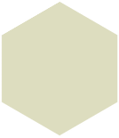 Abierto Open | 1 | 1 | 2 | Open | – | – |
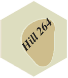 Colina Hill | 1 | 2 | 3 | Sí | Sí | – |
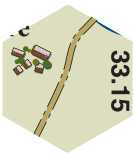 Pueblo Village | ot | ot | ot | Sí | Sí | – |
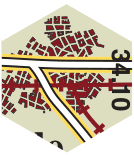 Ciudad City | ot | ot | ot | Sí | Sí | Sí |
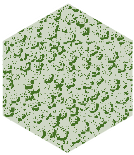 Bosque Woods | 1 | 4 + STOP | 4 + STOP | Sí | Sí | – |
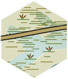 Pantano Marsh | Todo | P | P | Sí | – | – |
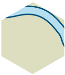 Río (lado) River | +2 | P | P | Sí ¹ | – | Sí |
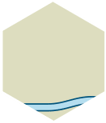 Arroyo (lado) Stream | +1 | +1 | +4 | Sí ¹ | – | – |
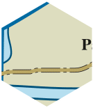 Barrera de agua (lado) Water Barrier | P | P | P | – | – | – |
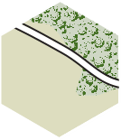 Carretera principal Primary | ½ | ½ | ¼ | – | – | – |
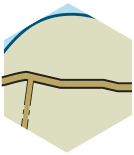 Carretera secundaria Secondary | ½ | ½ | ½ | – | – | – |
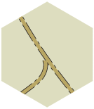 Pista Track | ½ | 1 | 1 | – | – | – |
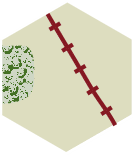 Ferrocarril RR | 1 | 2 | 2 | – | – | – |
ot usa el otro terreno del hex · P prohibido · 4 + STOP cuesta 4 MP y detiene · Todo gasta todo el MA · ½ ¼ siguiendo la carretera. ¹ Solo si el atacante ataca a través de ese lado; nunca en enfrentamientos ni ataques por fuego. Con lluvia, la transitabilidad es Poor. Más en Movimiento y ZOC.